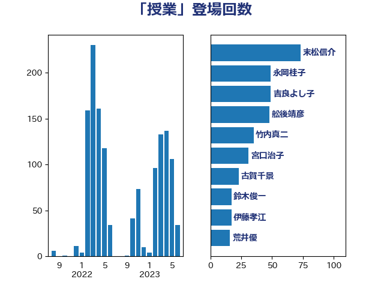

単語「授業」

| 萩生田光一 | 自由民主党 | 196 回 |
| 舩後靖彦 | れいわ新選組 | 87 回 |
| 末松信介 | 自由民主党 | 73 回 |
| 吉良よし子 | 日本共産党 | 45 回 |
| 伊藤孝恵 | 国民民主党 | 36 回 |
| 斎藤嘉隆 | 立憲民主党 | 26 回 |
| 勝部賢志 | 立憲民主党 | 23 回 |
| 梅村みずほ | 日本維新の会 | 22 回 |
| 伊藤孝江 | 公明党 | 20 回 |
| 宮口治子 | 立憲民主党 | 20 回 |
| 寺田学 | 立憲民主党 | 20 回 |
| 佐々木さやか | 公明党 | 19 回 |
| 下条みつ | 立憲民主党 | 17 回 |
| 城井崇 | 立憲民主党 | 17 回 |
| 山下芳生 | 日本共産党 | 17 回 |
| 稲富修二 | 立憲民主党 | 15 回 |
| 岬麻紀 | 日本維新の会 | 14 回 |
| 上野通子 | 自由民主党 | 13 回 |
| 藤田文武 | 日本維新の会 | 12 回 |
| 吉田はるみ | 立憲民主党 | 11 回 |
| 水岡俊一 | 立憲民主党 | 11 回 |
| 浮島智子 | 公明党 | 11 回 |
| 荒井優 | 立憲民主党 | 11 回 |
| 宮本徹 | 日本共産党 | 10 回 |
| 小林茂樹 | 自由民主党 | 10 回 |
| 岸田文雄 | 自由民主党 | 10 回 |
| 細野豪志 | 自由民主党 | 10 回 |
| 高見康裕 | 自由民主党 | 10 回 |
| 岸信夫 | 自由民主党 | 9 回 |
| 川崎ひでと | 自由民主党 | 9 回 |
| 宮本岳志 | 日本共産党 | 8 回 |
| 石川昭政 | 自由民主党 | 8 回 |
| 青山大人 | 立憲民主党 | 8 回 |
| 上杉謙太郎 | 自由民主党 | 7 回 |
| 田村智子 | 日本共産党 | 7 回 |
| 笠浩史 | 無所属 | 7 回 |
| 舟山康江 | 国民民主党 | 7 回 |
| 西村康稔 | 自由民主党 | 7 回 |
| 小泉進次郎 | 自由民主党 | 6 回 |
| 掘井健智 | 日本維新の会 | 6 回 |
| 河西宏一 | 公明党 | 6 回 |
| 赤羽一嘉 | 公明党 | 6 回 |
| 青木愛 | 立憲民主党 | 6 回 |
| 土屋品子 | 自由民主党 | 5 回 |
| 塩田博昭 | 公明党 | 5 回 |
| 武田良太 | 自由民主党 | 5 回 |
| 浅田均 | 日本維新の会 | 5 回 |
| 湯原俊二 | 立憲民主党 | 5 回 |
| 稲津久 | 公明党 | 5 回 |
| 若宮健嗣 | 自由民主党 | 5 回 |
| 鈴木義弘 | 国民民主党 | 5 回 |
| 音喜多駿 | 日本維新の会 | 5 回 |
| 中曽根康隆 | 自由民主党 | 4 回 |
| 串田誠一 | 日本維新の会 | 4 回 |
| 丹羽秀樹 | 自由民主党 | 4 回 |
| 勝目康 | 自由民主党 | 4 回 |
| 堤かなめ | 立憲民主党 | 4 回 |
| 安江伸夫 | 公明党 | 4 回 |
| 小野泰輔 | 日本維新の会 | 4 回 |
| 山田勝彦 | 立憲民主党 | 4 回 |
| 熊谷裕人 | 立憲民主党 | 4 回 |
| 西岡秀子 | 国民民主党 | 4 回 |
| 鈴木俊一 | 自由民主党 | 4 回 |
| 長友慎治 | 国民民主党 | 4 回 |
| 高階恵美子 | 自由民主党 | 4 回 |
| 鰐淵洋子 | 公明党 | 4 回 |
| 仁木博文 | 無所属 | 3 回 |
| 今井絵理子 | 自由民主党 | 3 回 |
| 伊藤岳 | 日本共産党 | 3 回 |
| 山崎正恭 | 公明党 | 3 回 |
| 山田俊男 | 自由民主党 | 3 回 |
| 早坂敦 | 日本維新の会 | 3 回 |
| 杉本和巳 | 日本維新の会 | 3 回 |
| 梅村聡 | 日本維新の会 | 3 回 |
| 森山浩行 | 立憲民主党 | 3 回 |
| 櫻井周 | 立憲民主党 | 3 回 |
| 池田佳隆 | 自由民主党 | 3 回 |
| 清水貴之 | 日本維新の会 | 3 回 |
| 片山大介 | 日本維新の会 | 3 回 |
| 田野瀬太道 | 無所属 | 3 回 |
| 磯崎仁彦 | 自由民主党 | 3 回 |
| 西銘恒三郎 | 自由民主党 | 3 回 |
| 道下大樹 | 立憲民主党 | 3 回 |
| 中野洋昌 | 公明党 | 2 回 |
| 井上信治 | 自由民主党 | 2 回 |
| 伊佐進一 | 公明党 | 2 回 |
| 伊東信久 | 日本維新の会 | 2 回 |
| 務台俊介 | 自由民主党 | 2 回 |
| 吉良州司 | 無所属 | 2 回 |
| 堀場幸子 | 日本維新の会 | 2 回 |
| 大石あきこ | れいわ新選組 | 2 回 |
| 山添拓 | 日本共産党 | 2 回 |
| 山谷えり子 | 自由民主党 | 2 回 |
| 岩渕友 | 日本共産党 | 2 回 |
| 後藤茂之 | 自由民主党 | 2 回 |
| 打越さく良 | 立憲民主党 | 2 回 |
| 朝日健太郎 | 自由民主党 | 2 回 |
| 松野博一 | 自由民主党 | 2 回 |
| 林芳正 | 自由民主党 | 2 回 |
| 枝野幸男 | 立憲民主党 | 2 回 |
| 根本幸典 | 自由民主党 | 2 回 |
| 浅野哲 | 国民民主党 | 2 回 |
| 牧義夫 | 立憲民主党 | 2 回 |
| 田村まみ | 国民民主党 | 2 回 |
| 畦元将吾 | 自由民主党 | 2 回 |
| 緒方林太郎 | 無所属 | 2 回 |
| 芳賀道也 | 国民民主党 | 2 回 |
| 谷合正明 | 公明党 | 2 回 |
| 赤池誠章 | 自由民主党 | 2 回 |
| 長峯誠 | 自由民主党 | 2 回 |
| 階猛 | 立憲民主党 | 2 回 |
| 高橋光男 | 公明党 | 2 回 |
| ながえ孝子 | 無所属 | 1 回 |
| 三木圭恵 | 日本維新の会 | 1 回 |
| 下野六太 | 公明党 | 1 回 |
| 世耕弘成 | 自由民主党 | 1 回 |
| 中川宏昌 | 公明党 | 1 回 |
| 中村裕之 | 自由民主党 | 1 回 |
| 中西祐介 | 自由民主党 | 1 回 |
| 伊波洋一 | 無所属 | 1 回 |
| 佐藤英道 | 公明党 | 1 回 |
| 倉林明子 | 日本共産党 | 1 回 |
| 前原誠司 | 国民民主党 | 1 回 |
| 吉田とも代 | 日本維新の会 | 1 回 |
| 國重徹 | 公明党 | 1 回 |
| 坂本哲志 | 自由民主党 | 1 回 |
| 坂本祐之輔 | 立憲民主党 | 1 回 |
| 堀内詔子 | 自由民主党 | 1 回 |
| 大串正樹 | 自由民主党 | 1 回 |
| 大島敦 | 立憲民主党 | 1 回 |
| 大西健介 | 立憲民主党 | 1 回 |
| 大西英男 | 自由民主党 | 1 回 |
| 大野敬太郎 | 自由民主党 | 1 回 |
| 大野泰正 | 自由民主党 | 1 回 |
| 宗清皇一 | 自由民主党 | 1 回 |
| 宮崎政久 | 自由民主党 | 1 回 |
| 寺田静 | 無所属 | 1 回 |
| 山本左近 | 自由民主党 | 1 回 |
| 山際大志郎 | 自由民主党 | 1 回 |
| 岡本あき子 | 立憲民主党 | 1 回 |
| 平山佐知子 | 無所属 | 1 回 |
| 平林晃 | 公明党 | 1 回 |
| 平沼正二郎 | 自由民主党 | 1 回 |
| 斎藤アレックス | 国民民主党 | 1 回 |
| 新垣邦男 | 立憲民主党 | 1 回 |
| 日下正喜 | 公明党 | 1 回 |
| 木村英子 | れいわ新選組 | 1 回 |
| 松島みどり | 自由民主党 | 1 回 |
| 柴山昌彦 | 自由民主党 | 1 回 |
| 柴田巧 | 日本維新の会 | 1 回 |
| 永岡桂子 | 自由民主党 | 1 回 |
| 池畑浩太朗 | 日本維新の会 | 1 回 |
| 河野太郎 | 自由民主党 | 1 回 |
| 河野義博 | 公明党 | 1 回 |
| 泉健太 | 立憲民主党 | 1 回 |
| 浅川義治 | 日本維新の会 | 1 回 |
| 浜田聡 | NHK党 | 1 回 |
| 浦野靖人 | 日本維新の会 | 1 回 |
| 渡辺創 | 立憲民主党 | 1 回 |
| 渡辺猛之 | 自由民主党 | 1 回 |
| 滝波宏文 | 自由民主党 | 1 回 |
| 牧原秀樹 | 自由民主党 | 1 回 |
| 田中英之 | 自由民主党 | 1 回 |
| 田嶋要 | 立憲民主党 | 1 回 |
| 石井章 | 日本維新の会 | 1 回 |
| 石井苗子 | 日本維新の会 | 1 回 |
| 石原正敬 | 自由民主党 | 1 回 |
| 石川大我 | 立憲民主党 | 1 回 |
| 福島みずほ | 社会民主党 | 1 回 |
| 福重隆浩 | 公明党 | 1 回 |
| 秋野公造 | 公明党 | 1 回 |
| 緑川貴士 | 立憲民主党 | 1 回 |
| 羽田次郎 | 立憲民主党 | 1 回 |
| 船橋利実 | 自由民主党 | 1 回 |
| 菅家一郎 | 自由民主党 | 1 回 |
| 菅義偉 | 自由民主党 | 1 回 |
| 菊田真紀子 | 立憲民主党 | 1 回 |
| 藤巻健太 | 日本維新の会 | 1 回 |
| 西野太亮 | 自由民主党 | 1 回 |
| 谷田川元 | 立憲民主党 | 1 回 |
| 近藤和也 | 立憲民主党 | 1 回 |
| 遠藤良太 | 日本維新の会 | 1 回 |
| 野田聖子 | 自由民主党 | 1 回 |
| 須藤元気 | 無所属 | 1 回 |
| 高木かおり | 日本維新の会 | 1 回 |
| 高良鉄美 | 無所属 | 1 回 |
| 高野光二郎 | 自由民主党 | 1 回 |